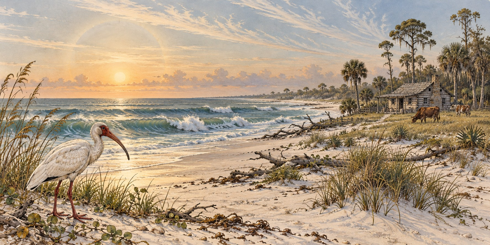

How Florida Pioneers Predicted Storms
Reading the Sky, the Sea, and the Birds Before Anyone Had a Better Option

The American white ibis became an enduring Florida storm symbol. The University of Miami’s ibis tradition began with its yearbook name in 1926; the Sebastian mascot character came later. Local legend associated the bird with retreating inland before hurricanes and returning afterward. The story raises a question pioneer families faced: without satellites or radio bulletins, how could anyone recognize an approaching storm?
A World Without Instruments
Florida’s earliest settlers, fishing families, cattle ranchers and small farmers, lived without any institutional warning system. U.S. hurricane warning flags did not appear until 1875, and even afterward they could only confirm a storm already known to forecasters in a port city. They did nothing for an isolated cattle ranch or fishing camp far from a telegraph line.
For most of pioneer history, residents had three sources of information: the sky, the sea and tides, and the behavior of animals. None offered a precise forecast. What they offered was a shared vocabulary of attention, reasons to watch more closely when something felt wrong.
What the Sky and Sea Told Them
Coastal and farming communities developed a consistent set of sky signs long before anyone understood the atmospheric science: a reddened, hazy sunset, a ring or halo around the sun or moon, high wispy clouds resembling a horse’s tail. These can reflect rising moisture and shifting pressure, real precursors to changing weather, but none reliably distinguished a hurricane from an ordinary front.
The sea gave a more specific signal: a heavy, confused swell arriving under a clear sky, often the first physical evidence of a hurricane still over the horizon. A hurricane’s long swells can outrun its visible weather, a real effect rooted in ocean wave mechanics, and it gave attentive coastal Floridians a head start that sky-watching could not.
The Bird That Became a Mascot
No piece of Florida storm folklore has lasted as visibly as the story of the American white ibis. According to local legend, the bird retreats inland as a hurricane approaches and returns to its range as soon as the storm passes. The ibis became the University of Miami’s unofficial mascot in 1926, when the yearbook adopted its name. The Sebastian character developed in the 1950s.
The legend is folklore, not established science. The ibis’s storm-sensing reputation has not been validated by controlled research. What can honestly be said is that the legend is real and well documented in Florida’s cultural history.
A Bird Study With a Surprising Result
A 2018 study by Christopher Heckscher in Scientific Reports found a relationship between Veery nesting behavior at a Delaware study site and the Atlantic season’s later accumulated cyclone energy, a measure of storm activity. The study suggests that seasonal environmental signals may influence breeding and migration. It does not show that a bird can forecast a particular hurricane’s track, and the result should not be treated as a substitute for official warnings.
Livestock, Insects and Frogs
Pioneer cattle ranchers shared the broader Southern body of livestock lore: cattle growing restless or lying down as pressure shifted, horses stretching their necks and sniffing the air, sheep turning to face an oncoming wind. Many animals are genuinely sensitive to the barometric changes that precede significant weather, hurricanes included.
Frogs calling with unusual persistence before rain reflect a real pattern. Males intensify mating calls because rain improves reproductive success, so more frog noise is an indirect signal of wet weather rather than a warning.
What Folklore Did and Did Not Do
This body of lore did not predict a hurricane’s landfall, intensity or timing. No red sunset or restless cow told a Cracker family whether the storm would strike their homestead or pass eighty miles north. What it provided was a culture of attention, habits passed down across generations that gave isolated communities some reason to watch the sky and sea more carefully. For many pioneer families, that habit was the only warning they would ever receive.
Quick Facts
| Tools available | No radio, no telegraph warning network, no satellites |
|---|---|
| Sky signs | Red hazy sunset, halo around sun or moon, mare’s-tail clouds |
| Sea sign | Heavy, confused swell under a clear sky |
| First U.S. warning flags | 1875 |
| Florida’s storm bird | American white ibis; UM unofficial ibis mascot in 1926; Sebastian developed in the 1950s |
| Veery study | 2018; nesting behavior associated with later seasonal cyclone energy |
| What folklore gave | General alertness, not precise forecasts |
Did You Know?
The university’s ibis tradition began in 1926; the Sebastian mascot character developed in the 1950s.
A hurricane’s swell can reach a coast before any cloud or wind does.
Frogs call more before rain because it helps them breed, not because they are warning anyone.
Vocabulary
Folklore: traditional beliefs and sayings passed down without scientific testing.
Swell: long, regular ocean waves that travel far beyond the storm that made them.
Barometric pressure: the weight of the atmosphere, which drops as many storms approach.
Discussion Questions
Which pioneer weather signs have some scientific basis, and which are tradition?
Why does this article call folklore a “culture of attention” rather than a forecast?
Related Articles
FLH-0021 — Hurricane Warnings Before Radio
FLH-0016 — How Hurricane Forecasting Changed Florida
FLH-0003 — The Great Miami Hurricane of 1926
FLH-0022 — Surviving a Storm in a Cracker Cabin
Sources
ClickOrlando / WKMG. “From Myth to Meteorology: The Science Behind the Hurricane Bird.” clickorlando.com
National Environmental Education Foundation. “Five Faunal Forecasters: Can Animals Predict the Weather?” (citing a 2019 Scientific Reports study on Veery). neefusa.org
The Old Farmer’s Almanac. “Can Animals Predict the Weather?” almanac.com
Farmers’ Almanac. “What Does Weather Lore Say About Hurricanes?” farmersalmanac.com
Florida Memory. “Florida Crackers.” State Library and Archives of Florida. floridamemory.com
Wikipedia. “Florida Cracker” and “Weather Lore.”
Heckscher — Veery nesting study, 2018